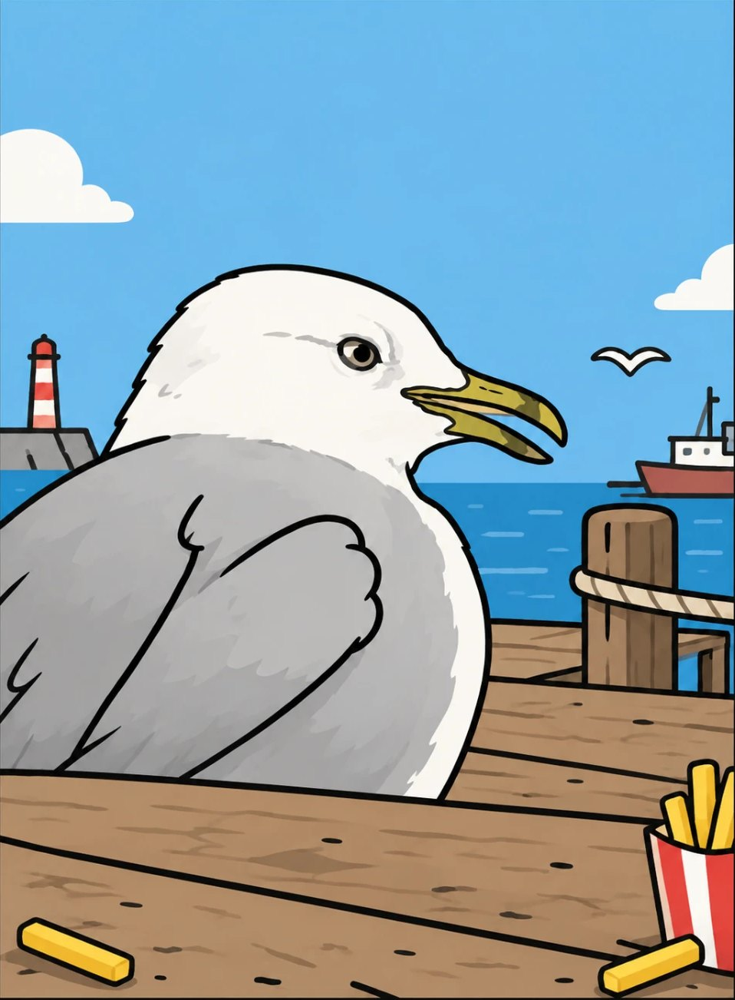
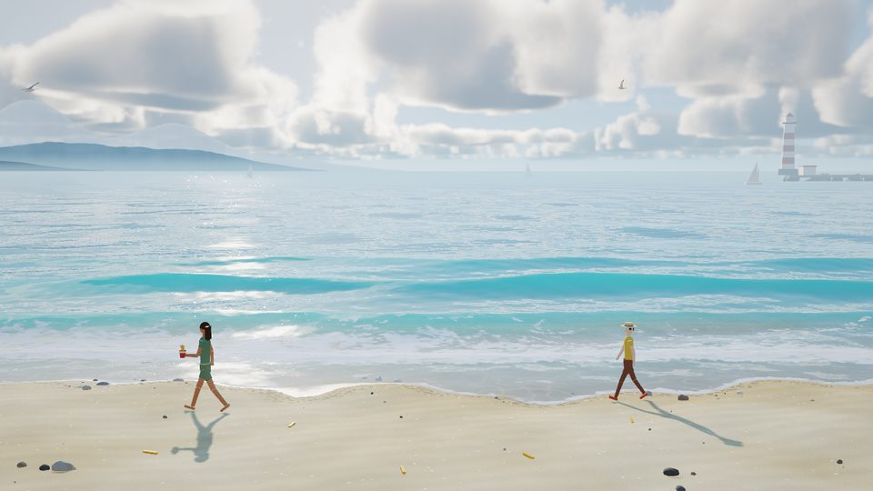
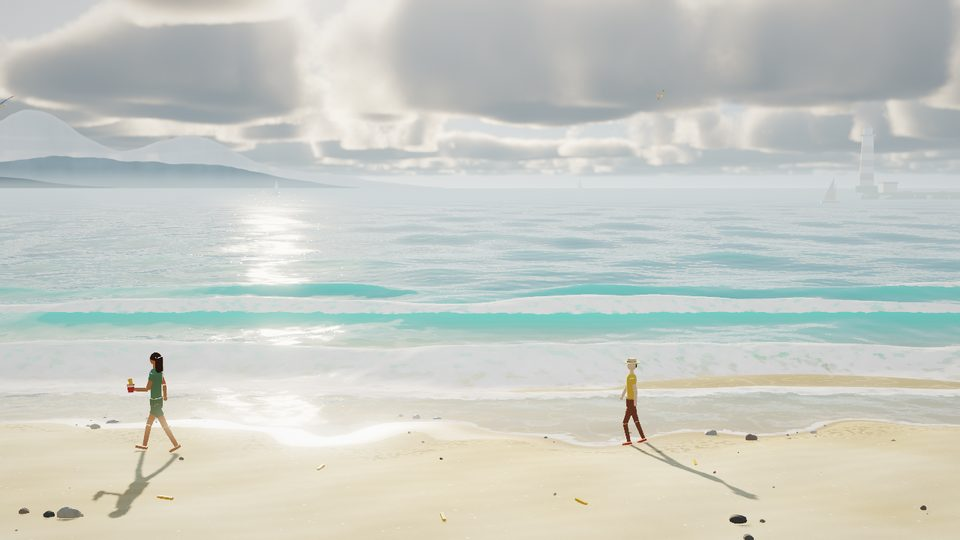
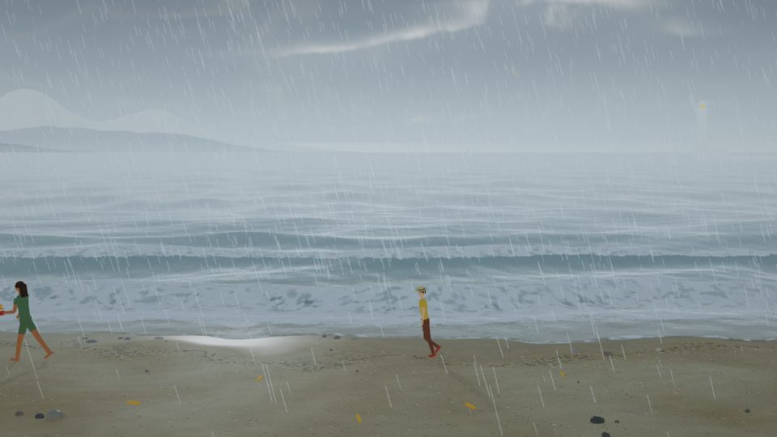
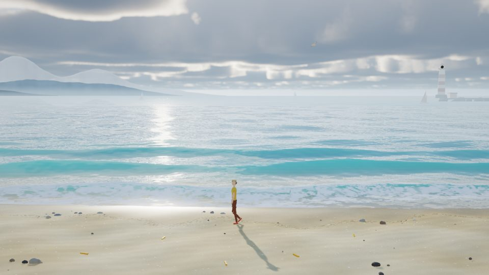
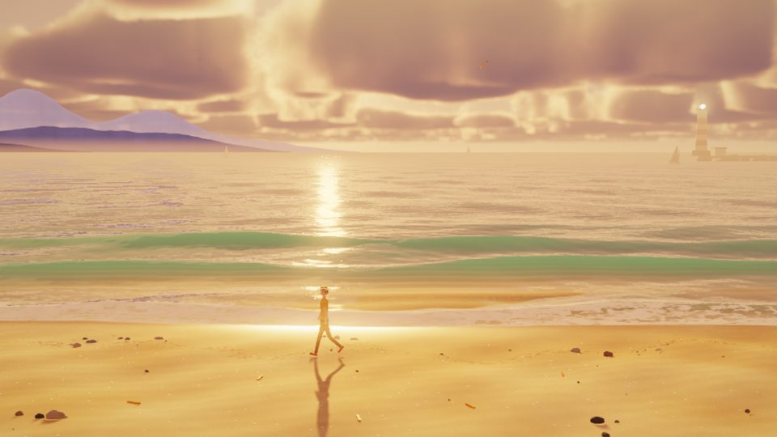
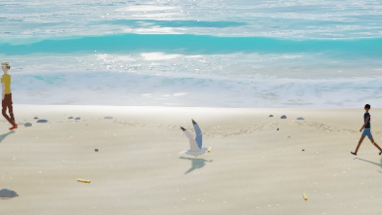

去码头
整点儿薯条
FRIES BY THE PIER
ABOUT // 关于
一片会自己过日子的海边
路人拿着薯条走过沙滩，偶尔掉下一根。点一下，海鸥就会飞下来把它叼走。
镜头固定站在沙滩上望向大海。海浪在近岸破碎、冲上沙滩又退回去，云影从海面和沙滩上扫过，阳光在浪尖上一闪一闪。天气会自己慢慢变化；点一下左上角的天气名称，也可以换一种。
没有目标，也没有分数。它只是一个可以打开放着、看一会儿、听一会儿的地方。
- TYPE
- 实时 3D 互动场景
- CONTROL
- 点击 / 触摸沙滩召唤海鸥；点左上角的天气名称切换天气，转完一圈回到自动
- SOUND
- 海浪、风、雨、海鸥、脚步和一段柔和的背景音乐，全部实时合成；轻触画面开启，右上角可以关掉
- PLATFORM
- 网页浏览器 · WebGL（支持 WebGL2 时有体积云）
- TECH
- three.js · 自写着色器
WEATHER // 天气
五种天气
-
WX-01

晴朗碧蓝的浅海，浪尖闪着阳光。 -
WX-02

起风了浪更大，泡沫更多，云跑得更快。 -
WX-03

下雨雨丝斜落，海面打出涟漪，路人低头快走，灯塔亮起。 -
WX-04

云影掠过光束从云隙间落下，云影扫过沙滩。 -
WX-05

傍晚暖色的斜阳，远山发紫，灯塔开始闪光。
DETAILS // 细节
海边有什么

GULL
一只真实比例的海鸥
按银鸥做的，翼展约 1.4 米。俯冲、放下双脚落地、低头啄起薯条，再扑腾着飞回海上。
- PEOPLE
掉薯条的路人
他们会互相让路，也会给正在降落的海鸥让出位置；下雨时会低着头加快脚步。
- SURF
会冲上沙滩的浪
浪在近岸破碎，冲上沙滩又退回去，留下一片片泡沫和湿亮的沙子。
- HORIZON
远方
远山、帆船、防波堤和灯塔。运气好的话，还能看到一位很少出现的客人从海湾驶过。
去码头整点儿薯条有声音，轻触画面开启 · 首次加载需要一点时间
进入码头 ENTER